Slide thuyết trình môn Lưu trữ & xử lý dữ liệu lớn (giảng viên Tạ Duy Hoàng), nhóm Trương Tuấn Nghĩa (20251196M), Nguyễn Vũ Việt Hoàng (20252091M), Nguyễn Thế Hoàng (20251228M).
Nội dung bám sát 100% Chương 2 giáo trình chính thức của môn học (IT4931_lecture_notes.pdf, tr.23–36), không bổ sung nội dung ngoài phạm vi sách.
IT4931: Lưu trữ & xử lý dữ liệu lớn · Bài tập lớn
Hệ sinh thái Hadoop
Chương 2: Lưu trữ và Xử lý Dữ liệu Lớn (Trần Văn Đặng, Nguyễn Hữu Đức, Nguyễn Bình Minh, Trần Việt Trung, ĐH Bách Khoa Hà Nội)
Nhóm 1 · Trương Tuấn Nghĩa (20251196M) · Nguyễn Vũ Việt Hoàng (20252091M) · Nguyễn Thế Hoàng (20251228M)
Nền tảng mã nguồn mở được thiết kế để lưu trữ và xử lý khối lượng dữ liệu lớn trên cụm máy tính: cung cấp khả năng lưu trữ scalable (mở rộng được) và reliable (tin cậy), hỗ trợ xử lý song song
trên phần cứng thông dụng (commodity hardware).
Kiến trúc scale-out
Mở rộng bằng cách thêm máy thay vì nâng cấp 1 máy duy nhất: cho phép mở rộng cụm lên hàng chục nghìn node.
Triết lý chịu lỗi
Hỏng hóc phần cứng được xem là điều bình thường, không phải ngoại lệ: hệ thống tự động phát hiện lỗi, nhân bản dữ liệu và chuyển tác vụ sang node khác.
Nguồn gốc: 2 bài báo của Google
Hadoop phát triển dựa trên nghiên cứu của Google về hệ thống phân tán:
Bài báo gốc
Google
Trở thành trong Hadoop
Google File System (GFS)
Hệ thống tập tin phân tán
HDFS
MapReduce (2004)
Mô hình lập trình song song
Hadoop MapReduce
Mục tiêu chính: giải quyết bài toán lưu trữ và xử lý dữ liệu lớn trong môi trường phân tán, trên phần cứng rẻ tiền thay vì thiết bị chuyên dụng đắt tiền.
Bốn thành phần cốt lõi của Hadoop
Thành phần
Vai trò
HDFS (Hadoop Distributed File System)
Lưu trữ dữ liệu dung lượng lớn trên cụm máy tính
Hadoop MapReduce
Mô hình lập trình phân tán xử lý dữ liệu lớn kiểu batch
Hadoop YARN (Yet Another Resource Negotiator)
Quản lý tài nguyên & lập lịch tác vụ, cho nhiều ứng dụng chạy đồng thời
Hadoop Common
Bộ thư viện & tiện ích chung hỗ trợ các module khác
Phối hợp
HDFS đảm bảo lưu trữ tin cậy · MapReduce cung cấp mô hình lập trình đơn giản · YARN điều phối hiệu quả tài nguyên: kết hợp giúp xử lý dữ liệu khổng lồ với chi phí hợp lý.
Scale-out so với Scale-up
Tiêu chí
Scale-up (truyền thống)
Scale-out (Hadoop)
Cách mở rộng
Nâng cấp 1 máy chủ (thêm CPU/RAM đắt tiền)
Thêm nhiều máy chủ rẻ tiền vào cụm
Giới hạn mở rộng
Bị chặn bởi phần cứng cao cấp nhất hiện có
Mở rộng tới hàng chục nghìn node
Xử lý lỗi
1 máy hỏng = toàn hệ thống dừng
Lỗi node là bình thường, tự động nhân bản & chuyển tác vụ
Chi phí
Tăng phi tuyến khi nâng cấp máy đơn
Tăng gần tuyến tính khi thêm node thông dụng
Vì sao quan trọng
Đây là lựa chọn kiến trúc nền tảng khiến Hadoop khả thi về chi phí cho bài toán dữ liệu petabyte: mọi thành phần khác (HDFS, YARN...) đều thiết kế xoay quanh triết lý scale-out này.
PHẦN 2/8
02
HDFS: lưu trữ phân tán
Mô hình write-once, read-many
Kiến trúc master/slave: NameNode & DataNode
Block & Replication (nhân bản)
Hạn chế của HDFS
HDFS được tối ưu cho điều gì?
HDFS tối ưu cho các tệp kích thước lớn (hàng trăm MB đến TB), mô hình truy cập
write-once, read-many (ghi một lần, đọc nhiều lần).
Đánh đổi có chủ đích
Thiết kế để đạt thông lượng cao thay vì độ trễ thấp: phù hợp xử lý batch hơn truy vấn tương tác thời gian thực.
Chạy trên phần cứng thông dụng (không cần thiết bị lưu trữ chuyên dụng đắt tiền): chấp nhận lỗi phần cứng xảy ra thường xuyên, bù lại bằng cơ chế chịu lỗi ở cấp phần mềm.
Kiến trúc master/slave: NameNode & DataNode
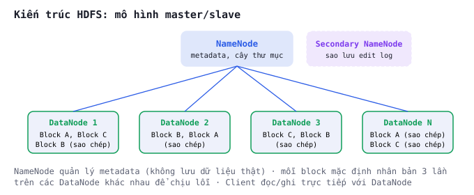
NameNodequản lý metadata: cấu trúc thư mục, tên tệp, ánh xạ tệp→block. Điều phối truy cập từ client.
DataNodelưu trữ block dữ liệu thật, xử lý yêu cầu đọc/ghi từ client.
Hình gốc: kiến trúc GFS, nguồn cảm hứng của HDFS
Nguồn: Ghemawat, Gobioff, Leung. The Google File System, SOSP 2003, Figure 1.
Trong bài báo gốc
Trong hệ sinh thái Hadoop
GFS master (namespace, ánh xạ file → chunk, trong RAM)
NameNode
GFS chunkserver (lưu chunk trên Linux file system)
DataNode
Chunk 64 MB, nhân bản trên nhiều chunkserver
Block 64/128 MB, nhân bản 3 lần
Client hỏi master vị trí, rồi đọc/ghi trực tiếp chunkserver (mũi tên dày = dữ liệu không đi qua master)
Client hỏi NameNode, truyền dữ liệu thẳng với DataNode
Hình gốc: luồng ghi của GFS, gốc của pipeline nhân bản trong HDFS
Nguồn: Ghemawat, Gobioff, Leung. The Google File System, SOSP 2003, Figure 2 (mũi tên mảnh = điều khiển, mũi tên dày = dữ liệu).
Trong bài báo gốc
Trong hệ sinh thái Hadoop
Bước 1-2: client hỏi master ai giữ lease (primary) và vị trí các replica
Client hỏi NameNode danh sách DataNode cho block mới
Bước 3: client đẩy dữ liệu theo chuỗi replica, mỗi máy chuyển tiếp ngay cho máy gần nhất chưa nhận
Ghi theo pipeline DataNode 1 → 2 → 3, tận dụng băng thông ra của từng máy
Bước 4-7: điều khiển đi qua primary, primary đánh số thứ tự rồi báo các secondary, tất cả trả lời lại
Gói xác nhận (ack) chạy ngược pipeline về client
Tách luồng dữ liệu khỏi luồng điều khiển để dùng mạng hiệu quả
Cùng nguyên tắc: NameNode chỉ điều khiển, dữ liệu đi thẳng giữa client và DataNode
Block là gì?
Mỗi tệp trong HDFS được chia thành nhiều block (khối dữ liệu) thay vì lưu nguyên khối như hệ file thông thường.
Kích thước block mặc định
$64\text{ MB hoặc }128\text{ MB}$
Vì sao chia block
Block lớn giúp giảm chi phí quản lý metadata (ít block hơn so với chia nhỏ như hệ file truyền thống 4KB) và phù hợp mô hình đọc/ghi tuần tự khối lượng lớn mà HDFS hướng tới.
Replication (nhân bản) hoạt động ra sao?
Mỗi block được replicate (nhân bản) thành nhiều bản sao, phân phối trên các DataNode khác nhau trong cụm.
Hệ số nhân bản mặc định
$3\text{ bản sao trên 3 DataNode khác nhau}$
Vì sao nhân bản giúp chịu lỗi
Khi 1 DataNode hỏng, hệ thống vẫn còn bản sao trên node khác: NameNode tự động điều phối sao chép lại để duy trì đủ số bản sao mặc định.
Ví dụ minh hoạ: dung lượng vật lý thực cần
Ví dụ số liệu tự tính để minh hoạ khái niệm: không trích từ sách, chỉ dùng đúng các thông số sách đã nêu (block 128MB, nhân bản 3 lần).
Bước tính
Giá trị
Kích thước tệp cần lưu
1 TB = 1 048 576 MB
Kích thước block
128 MB
Số block cần (1 048 576 / 128)
= 8 192 block
Hệ số nhân bản
× 3
Dung lượng vật lý thực tế cần trên cụm
= 3 TB (gấp 3 lần dữ liệu gốc)
Đánh đổi
Nhân bản 3 lần giúp chịu lỗi tốt nhưng tốn gấp 3 lần dung lượng lưu trữ thật: đây là chi phí đổi lấy độ tin cậy của HDFS.
NameNode có phải điểm yếu duy nhất?
NameNode là thành phần trung tâm duy nhất giữ toàn bộ metadata: nếu NameNode gặp sự cố mà không có cơ chế dự phòng, cả hệ thống có nguy cơ mất khả năng xác định dữ liệu nằm ở đâu (dù dữ liệu thật vẫn còn nguyên trên DataNode).
Cơ chế giảm thiểu rủi ro
Secondary NameNode định kỳ sao lưu & hợp nhất edit log của NameNode, hỗ trợ phục hồi nhanh metadata khi NameNode gặp sự cố: không phải bản sao chạy song song, mà là điểm khôi phục.
Hạn chế của HDFS
Hạn chế
Lý do
Độ trễ truy xuất thấp (real-time)
Tối ưu cho thông lượng tuần tự, không phải truy vấn ngẫu nhiên
Số lượng lớn tệp nhỏ
Metadata mọi tệp giữ trong bộ nhớ NameNode: giới hạn RAM
Sửa đổi nội dung tuỳ ý
Chỉ hỗ trợ append ở cuối tệp, không ghi đè giữa file
Đánh đổi có chủ đích
HDFS hy sinh một số tính năng POSIX để đổi lấy khả năng mở rộng & chịu lỗi vượt trội: nhờ đó lưu trữ được hàng petabyte trên cụm hàng nghìn node.
PHẦN 3/8
03
MapReduce & YARN
Mô hình lập trình Map + Reduce
Vai trò MapReduce: Hadoop 1.x vs 2.x
Vì sao cần tách YARN khỏi MapReduce
Kiến trúc YARN: RM / AM / NM
Mô hình lập trình MapReduce
Đề xuất bởi Google (2004): framework đơn giản cho xử lý dữ liệu lớn song song, dựa trên 2 hàm do người lập trình định nghĩa:
Giai đoạn
Việc của lập trình viên
Việc của framework
Map (ánh xạ)
Viết hàm Map
Phân chia dữ liệu, phân phối tác vụ lên cụm
Reduce (giảm thiểu)
Viết hàm Reduce
Thu gộp kết quả trung gian, xử lý lỗi tự động
Điểm mạnh
Lập trình viên chỉ cần viết 2 hàm: phần song song hoá, phân phối, chịu lỗi đều do framework tự động đảm nhiệm.
Hình gốc: luồng thực thi MapReduce của Google
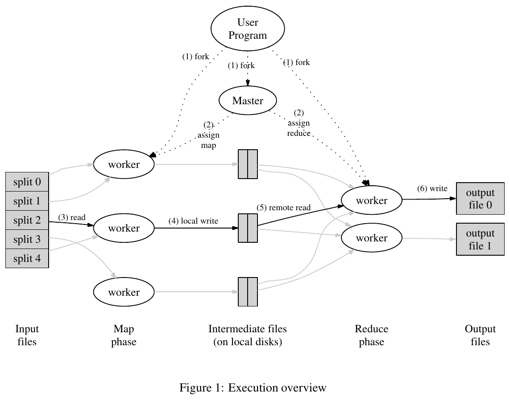
Nguồn: Dean, Ghemawat. MapReduce: Simplified Data Processing on Large Clusters, OSDI 2004, Figure 1.
Hình gốc: MapReduce lan nhanh trong Google chỉ sau 18 tháng
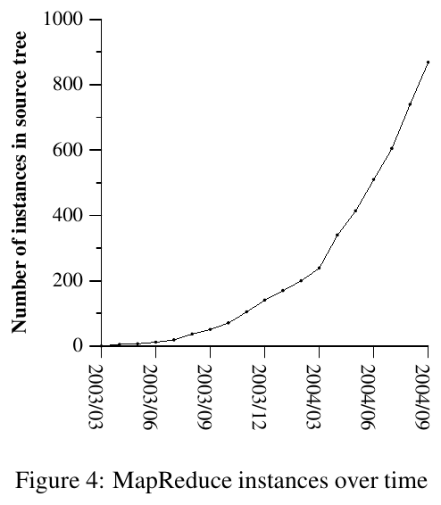
Figure 4: số chương trình MapReduce trong kho mã nguồn, từ 0 (đầu 2003) lên gần 900 (9/2004).
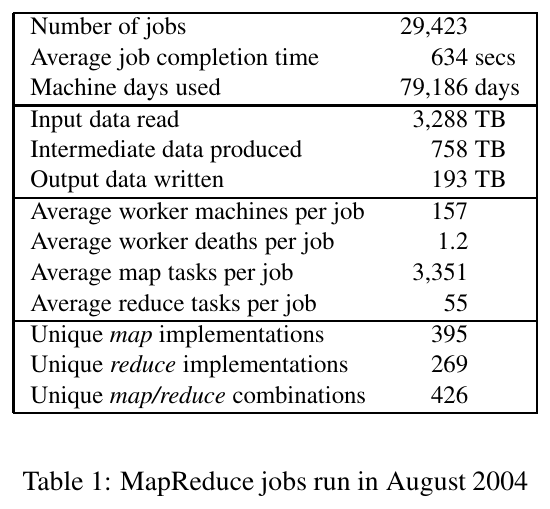
Table 1: các job MapReduce chạy tháng 8/2004 (nguồn: Dean, Ghemawat, OSDI 2004).
Đọc số liệu
Mỗi job trung bình dùng 157 máy và gặp 1,2 lần máy chết, nên chịu lỗi tự động không phải tính năng phụ mà là điều kiện để chạy được. Tổng cộng 29.423 job đọc 3.288 TB đầu vào trong 1 tháng.
Vai trò MapReduce: Hadoop 1.x → 2.x
Phiên bản
Vai trò MapReduce
Hadoop 1.x
Engine xử lý dữ liệu chính, cung cấp khả năng xử lý batch cho mọi bài toán
Hadoop 2.x (có YARN)
Trở thành một trong nhiều framework chạy trên cụm, cạnh tranh tài nguyên với Spark, Flink...
Tối ưu hoá tận dụng hạ tầng: Data Locality (đặt tác vụ gần dữ liệu), Minimal Data Exchange,
Fault Tolerance tự động: nhờ đó chạy hiệu quả trên hàng nghìn node, xử lý hàng petabyte theo lô.
Hạn chế
Độ trễ cao cho tác vụ lặp/tương tác → động lực ra đời Spark, Flink. Vẫn là nền tảng quan trọng cho batch processing truyền thống.
MapReduce tích hợp với cả hệ sinh thái
MapReduce không hoạt động đơn độc: nó là engine thực thi phía sau của nhiều công cụ khác:
Công cụ
Dịch sang MapReduce như thế nào
HDFS
MapReduce đọc/ghi dữ liệu trực tiếp qua HDFS
YARN
Quản lý tài nguyên cho các job MapReduce chạy trên cụm
Hive
Dịch câu lệnh HiveQL thành job MapReduce
Pig
Dịch kịch bản Pig Latin thành job MapReduce
Sqoop
Dùng MapReduce (chỉ Map task) để import/export dữ liệu
Ý nghĩa
Đây là lý do MapReduce được gọi là "engine chung": người dùng Hive/Pig/Sqoop không cần biết MapReduce chạy bên dưới, nhưng mọi tác vụ của họ cuối cùng đều quy về job MapReduce.
Vì sao cần tách riêng YARN?
Trong Hadoop 1.x, MapReduce vừa xử lý dữ liệu vừa quản lý tài nguyên & lập lịch trên cụm: dẫn đến hạn chế về hiệu năng và tính linh hoạt.
Giải pháp Hadoop 2.x
YARN (Yet Another Resource Negotiator) tách biệt quản lý tài nguyên khỏi xử lý dữ liệu, biến Hadoop thành nền tảng tổng quát hơn: nhiều mô hình (MapReduce, Spark, Flink, Tez...) cùng chạy trên 1 cụm.
Kiến trúc YARN
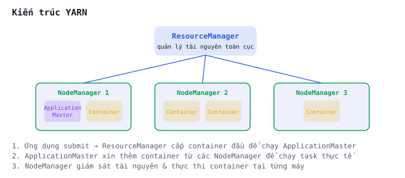
ResourceManagerquản lý tài nguyên toàn cục (CPU, bộ nhớ) cho mọi ứng dụng trên cụm
ApplicationMastermỗi ứng dụng có 1 riêng, lập lịch/phối hợp thực thi tác vụ trên các NodeManager
NodeManagertác nhân tại mỗi node: cấp container, giám sát thực thi tác vụ
Quy trình 1 ứng dụng chạy trên YARN
Ứng dụng được submit lên ResourceManager
ResourceManager cấp container đầu tiên để khởi chạy ApplicationMaster
ApplicationMaster yêu cầu ResourceManager cấp thêm container trên các NodeManager thích hợp
Các tác vụ của ứng dụng chạy trong những container đó, được NodeManager giám sát
Tự động hoá
Toàn bộ quá trình diễn ra tự động dưới sự điều phối của YARN: người dùng chỉ cần submit ứng dụng.
Lợi ích YARN mang lại cho Hadoop
Lợi ích
Giải thích
Đa dạng hoá workload
Nhiều loại ứng dụng chạy đồng thời (MapReduce, Spark, Flink, Tez...)
Tăng tính linh hoạt
Biến cụm Hadoop thành nền tảng đa năng, không chỉ dành cho MapReduce
Mở rộng & đa người dùng
Cấu hình chính sách lập lịch: FIFO, Fair Scheduler, Capacity Scheduler
Quản lý tài nguyên hiệu quả
Phân bổ công bằng & hiệu quả giữa các ứng dụng khác nhau
Ý nghĩa
YARN là bước ngoặt giúp hệ sinh thái Hadoop phát triển phong phú: Hive, Pig, Spark... có thể tích hợp và chạy chung 1 cụm thay vì hạ tầng riêng.
PHẦN 4/8
04
Hive & Pig: truy vấn và biến đổi dữ liệu
Apache Hive: data warehouse + HiveQL
Apache Pig: Pig Latin, data flow
Cả hai đều dịch sang job MapReduce
So sánh 2 hướng tiếp cận
Apache Hive: data warehouse trên Hadoop
Phát triển tại Facebook: cho phép truy vấn dữ liệu lớn bằng ngôn ngữ gần SQL (HiveQL): SELECT, JOIN, GROUP BY...
tự động dịch thành job MapReduce (hoặc Tez, Spark) để thực thi.
Đặc trưng
Ý nghĩa
Phù hợp phân tích dữ liệu lớn
Tối ưu cho truy vấn batch trên TB dữ liệu
Thân thiện người dùng
Nhà phân tích dùng SQL quen thuộc, không cần viết Java MapReduce
Schema on read
Dữ liệu lưu thô trên HDFS, schema chỉ định khi đọc: linh hoạt với dữ liệu đa dạng
Độ trễ
Tính bằng phút (do khởi tạo job MapReduce/Tez): phù hợp batch hơn truy vấn tương tác tức thì.
Hive hoạt động như thế nào?
Người dùng viết câu lệnh HiveQL (SELECT, JOIN, GROUP BY...)
Hive tự động dịch câu lệnh thành job MapReduce (hoặc Tez, Spark) tương ứng
Job thực thi trên cụm Hadoop, đọc dữ liệu thô từ HDFS theo schema đã khai báo khi đọc
Kết quả trả về dưới dạng bảng, giống làm việc với CSDL truyền thống
Giá trị cốt lõi
Người dùng không cần biết MapReduce chạy bên dưới: chỉ cần viết SQL quen thuộc.
Apache Pig: kịch bản xử lý dữ liệu
Phát triển tại Yahoo!: thay vì SQL, Pig cung cấp ngôn ngữ kịch bản Pig Latin để biểu diễn luồng xử lý
(đọc, lọc, biến đổi, gộp nhóm, join, sắp xếp...) theo dạng data flow.
Đặc điểm
Giải thích
Độ dễ lập trình
Câu lệnh tuần tự, Pig tự song song hoá & tối ưu
Tối ưu hoá
Biết trước toàn bộ luồng → kết hợp bước, đẩy bộ lọc lên sớm
Mở rộng (UDF)
Tự định nghĩa hàm bằng Java/Python chèn vào kịch bản
Pig Engine biên dịch kịch bản thành chuỗi job MapReduce: đặc biệt hiệu quả cho transform & join dữ liệu phức tạp.
So sánh Hive vs Pig
Tiêu chí
Hive
Pig
Ngôn ngữ
HiveQL (giống SQL)
Pig Latin (kịch bản)
Đối tượng dùng
Nhà phân tích quen SQL
Kỹ sư dữ liệu, ETL phức tạp
Mô hình dữ liệu
Bảng (schema-on-read)
Data flow tuần tự
Engine thực thi
Dịch sang MapReduce/Tez/Spark
Dịch sang MapReduce
Độ trễ
Vài phút (batch)
Vài phút (batch)
Điểm chung
Cả hai đều nhằm đơn giản hoá sử dụng Hadoop, không yêu cầu viết Java MapReduce thuần: cùng dịch công việc thành job MapReduce chạy trên cụm.
PHẦN 5/8
05
HBase & Sqoop
HBase: NoSQL wide-column trên Hadoop
Mô hình Bigtable (Google)
HBase vs RDBMS
Sqoop: cầu nối Hadoop ↔ SQL
Apache HBase: "cơ sở dữ liệu của Hadoop"
NoSQL phân tán xây trên Hadoop, thiết kế theo mô hình Bigtable (Google): lưu bảng hàng tỷ dòng, hàng triệu cột,
hỗ trợ truy cập ngẫu nhiên độ trễ thấp.
Ví von
Nếu HDFS giống hệ file, thì HBase giống database chạy trên HDFS, đọc/ghi theo kiểu bảng.
Đặc trưng
Giải thích
Mô hình wide-column
Cột nhóm thành column family; mỗi ô có row key, tên cột, giá trị, timestamp
Mở rộng cực lớn
Scale-out hàng trăm node, bảng hàng chục petabyte, tự động chia region
Đọc/ghi thời gian thực
Hàng trăm nghìn INSERT/giây nhờ LSM-tree + commit log
HBase khác RDBMS ở đâu?
Không phải RDBMS
HBase không hỗ trợ SQL hay join phức tạp: truy vấn qua API lập trình (Java/REST/Thrift) hoặc scan/get/put theo khoá. Không có transaction ACID đa bảng.
Phù hợp cho: truy cập ngẫu nhiên theo khoá, khối lượng lớn (vd tra cứu/cập nhật theo userID): hơn là phân tích ad-hoc.
Ví dụ thực tế: Facebook Messaging từng dùng HBase lưu tin nhắn cho hàng trăm triệu người dùng, khai thác khả năng mở rộng linh hoạt.
Hình gốc: mô hình dữ liệu Bigtable, nền của HBase
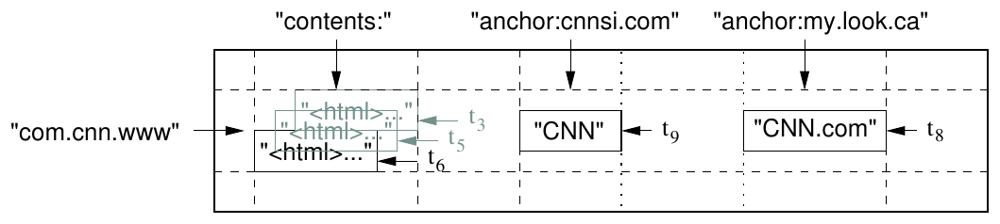
Nguồn: Chang et al. Bigtable: A Distributed Storage System for Structured Data, OSDI 2006, Figure 1 (ví dụ bảng lưu trang web, row key là URL đảo ngược).
Trong bài báo gốc
Trong hệ sinh thái Hadoop
Row key "com.cnn.www" (URL đảo ngược để các trang cùng domain nằm gần nhau, giữ thứ tự từ điển)
Row key của HBase, sắp xếp theo thứ tự byte; thiết kế row key quyết định locality và hotspotting
Column family contents: và anchor:
Column family; cột viết dạng family:qualifier
Mỗi ô có nhiều phiên bản gắn nhãn thời gian (t3, t5, t6)
Cell có nhiều version theo timestamp
Hình gốc: cách Bigtable tìm tablet, và vai trò của Chubby
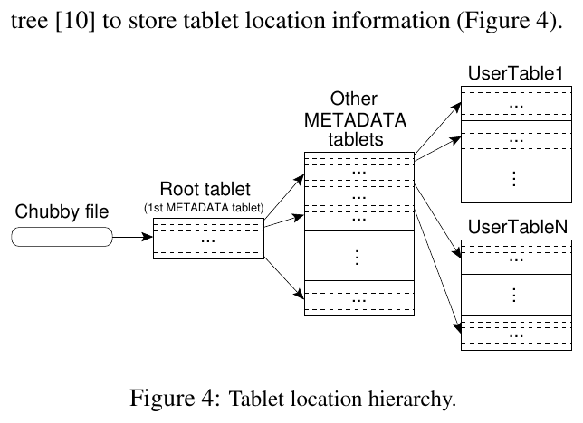
Nguồn: Chang et al. Bigtable, OSDI 2006, Figure 4 (phân cấp 3 tầng giống B+-tree).
Trong bài báo gốc
Trong hệ sinh thái Hadoop
Tầng 1: một file trong Chubby chứa vị trí root tablet
ZooKeeper lưu vị trí của bảng meta
Tầng 2-3: root tablet → các METADATA tablet → tablet của người dùng
Bảng meta chứa vị trí từng region của mọi bảng
Client lưu đệm vị trí, hiếm khi phải hỏi master
Client HBase cũng lưu đệm vị trí region
Hình gốc: tablet được lưu thế nào, gốc của MemStore và HFile
Ghi: vào tablet log (commit log) rồi vào memtable trong bộ nhớ
WAL rồi MemStore của HBase
Memtable đầy thì ghi thành SSTable bất biến trên GFS (minor compaction)
MemStore flush thành HFile trên HDFS
Đọc: gộp memtable với các SSTable đã sắp xếp; định kỳ gộp lại (merging / major compaction)
Đọc gộp MemStore và HFile; compaction định kỳ
Khi nào dùng HDFS+Hive, khi nào dùng HBase?
Nhu cầu
Chọn
Phân tích tổng hợp trên tập dữ liệu lớn (batch)
HDFS + MapReduce/Hive
Đọc/ghi ngẫu nhiên theo khoá, độ trễ thấp, gần thời gian thực
HBase
Truy vấn kiểu SQL, JOIN, GROUP BY phức tạp
Hive (không phải HBase)
Tra cứu/cập nhật theo userID với tốc độ cao
HBase (không phải Hive)
Nguyên tắc chọn
Không có công cụ nào "tốt hơn" tuyệt đối: HDFS+Hive phục vụ phân tích tổng hợp, HBase phục vụ truy cập chi tiết từng bản ghi. Hai nhu cầu khác nhau, hai công cụ khác nhau.
Apache Sqoop: cầu nối Hadoop ↔ RDBMS
Tên ghép từ SQL + Hadoop: công cụ nhập/xuất dữ liệu hàng loạt giữa Hadoop và RDBMS (MySQL, PostgreSQL, Oracle...).
Chiều
Cơ chế
Import (RDBMS → HDFS)
Kết nối JDBC, khởi chạy job MapReduce chỉ gồm Map task: mỗi task nhập 1 phần bảng (theo WHERE/primary key)
Export (HDFS → RDBMS)
Chia dữ liệu HDFS thành splits, mỗi Map task đẩy 1 phần vào CSDL qua batch INSERT
Use case tiêu biểu
Nhập bảng giao dịch từ data warehouse vào Hadoop để phân tích chuyên sâu · xuất kết quả Hive/HDFS ra bảng SQL cho ứng dụng kinh doanh.
Quy trình Sqoop Import từng bước
Sqoop kết nối tới CSDL nguồn qua JDBC
Thực thi truy vấn (hoặc duyệt từng bảng), chia dữ liệu theo điều kiện WHERE hoặc primary key
Khởi chạy job MapReduce chỉ gồm Map task: mỗi task nhập 1 phần dữ liệu song song
Ghi kết quả xuống HDFS (text/CSV hoặc Avro/Parquet), hoặc thẳng vào Hive/HBase nếu được chỉ định
Vì sao song song
Chia nhỏ theo primary key cho phép nhiều Map task cùng nhập dữ liệu đồng thời: tăng tốc đáng kể so với import tuần tự.
PHẦN 6/8
06
Kafka, Oozie, ZooKeeper
Kafka: nền tảng streaming pub-sub
Oozie: lập lịch workflow dạng DAG
ZooKeeper: dịch vụ điều phối phân tán
Vai trò trong toàn hệ sinh thái
Apache Kafka: streaming thời gian thực
Phát triển tại LinkedIn: nền tảng publish-subscribe phân tán: producer gửi thông điệp vào topic,
consumer đăng ký nhận từ topic đó.
Đặc điểm
Giải thích
Thông lượng & độ bền cao
Hàng triệu thông điệp/giây, ghi commit log tuần tự, nhân bản giữa broker
Partition
Mỗi topic chia nhiều partition: tăng song song; Kafka đảm bảo thứ tự trong từng partition
Multi-subscriber
Nhiều consumer group độc lập đọc cùng dữ liệu mà không ảnh hưởng nhau
Vai trò trong hệ sinh thái
Tầng thu thập/phân phối sự kiện (ingest): nguồn dữ liệu đầu vào liên tục cho Spark, Storm hoặc lưu vào HDFS/HBase.
Ví dụ minh hoạ: Kafka trong pipeline thu thập log
Minh hoạ dựa trên ví dụ sách nêu (thu thập log sự kiện người dùng vào topic "website_events"): diễn giải thêm để dễ hình dung, không phải trích nguyên văn.
Hàng trăm máy chủ web sinh ra sự kiện người dùng (click, xem trang...) liên tục
Mỗi sự kiện được gửi (produce) vào topic website_events
Topic được chia thành nhiều partition để tăng thông lượng ghi song song
Ứng dụng Hadoop/Spark consume dòng sự kiện này để xử lý gần thời gian thực
Điểm mấu chốt
Producer (máy chủ web) và consumer (Spark/Hadoop) không kết nối trực tiếp: Kafka đứng giữa như một hàng đợi bền vững, chịu lỗi.
Hình gốc: log của Kafka, thiết kế quanh offset
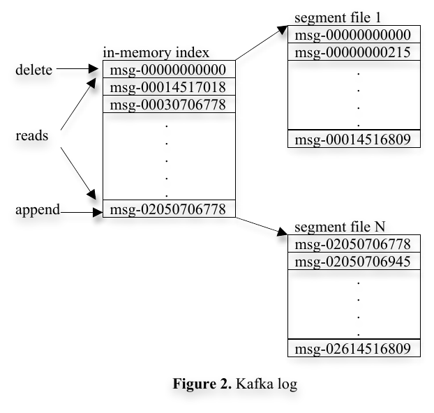
Nguồn: Kreps, Narkhede, Rao. Kafka: a Distributed Messaging System for Log Processing, NetDB 2011, Figure 2.
Trong bài báo gốc
Trong hệ sinh thái Hadoop
Mỗi partition là 1 log chia thành nhiều segment file
Partition của topic; segment file trên đĩa broker
Message được đánh địa chỉ bằng offset logic trong log, không có message id riêng
Offset: consumer tự nhớ vị trí đã đọc, broker không giữ trạng thái này (stateless broker)
Chỉ ghi nối vào cuối (append), đọc tuần tự, xóa theo thời gian lưu giữ (điển hình 7 ngày)
Retention theo thời gian; consumer có thể tua lại offset cũ để đọc lại
Hình gốc: Kafka tại LinkedIn, nơi dữ liệu chảy vào Hadoop
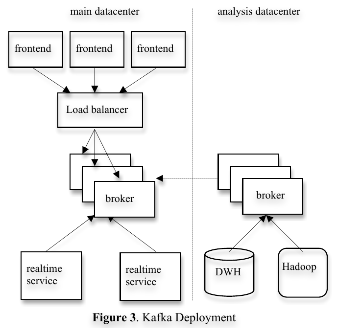
Nguồn: Kreps, Narkhede, Rao. Kafka: a Distributed Messaging System for Log Processing, NetDB 2011, Figure 3.
Trong bài báo gốc
Trong hệ sinh thái Hadoop
Frontend gửi log qua load balancer tới các broker ở datacenter chính
Producer → broker, đẩy theo lô
Dịch vụ thời gian thực đọc trực tiếp từ broker
Consumer xử lý gần thời gian thực
Datacenter phân tích có cụm Kafka kéo dữ liệu về, nuôi Hadoop và kho dữ liệu (DWH)
MapReduce đọc thẳng từ Kafka qua input format riêng, ghi kết quả vào HDFS
Bài báo nêu cỡ năm 2011: hàng trăm GB và gần 1 tỉ thông điệp mỗi ngày, trễ đầu-cuối khoảng 10 giây
Đây là lý do Kafka nằm ở tầng thu thập của hệ sinh thái
Apache Oozie: lập lịch workflow
Hệ thống quản lý & lập lịch luồng công việc (workflow scheduler) cho Hadoop: định nghĩa chuỗi job
(MapReduce → Hive → shell script...) và quản lý thực thi tuần tự/song song.
Mô hình DAG
Workflow mô tả dưới dạng đồ thị có hướng không chu trình: node là action/control node, cạnh là luồng thực thi (có điều kiện).
Ví dụ: chạy job MapReduce A → nếu thành công chạy job Hive B, nếu thất bại gửi email rồi kết thúc.
Coordinator: lên lịch lặp lại workflow theo thời gian (mỗi giờ/ngày) hoặc khi dữ liệu mới đến HDFS.
Apache ZooKeeper: dịch vụ điều phối
Chức năng
Mô tả ngắn
Quản lý cấu hình
Lưu & phân phát thông tin cấu hình cho các node
Đặt tên (naming)
Không gian tên chung để dịch vụ đăng ký & tìm nhau
Đồng bộ hoá phân tán
Cơ chế khoá, hàng rào (barrier) tránh xung đột
Dịch vụ nhóm
Theo dõi thành viên trong 1 nhóm node (vd RegionServer)
Bầu chọn leader
Đảm bảo đúng 1 node làm leader tại 1 thời điểm (ephemeral znode)
Vì sao ZooKeeper đáng tin cậy?
ZooKeeper dùng thuật toán ZAB (ZooKeeper Atomic Broadcast: thuộc họ thuật toán Paxos) để đảm bảo
tất cả server ZooKeeper (chạy thành cụm nhỏ) duy trì cùng một trạng thái.
Tính nhất quán tuần tự
Các thay đổi áp dụng theo mô hình nhất quán tuần tự; client có thể đăng ký watch để được thông báo ngay khi dữ liệu thay đổi hoặc node mới xuất hiện/biến mất.
Nhờ đó, các node trong hệ phân tán không cần liên lạc peer-to-peer phức tạp: chỉ cần dựa vào ZooKeeper như một "trọng tài chung" tin cậy.
Hình gốc: cấu trúc Chubby, nguồn cảm hứng của ZooKeeper
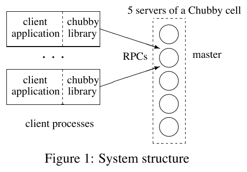
Nguồn: Burrows. The Chubby lock service for loosely-coupled distributed systems, OSDI 2006, Figure 1.
Trong bài báo gốc
Trong hệ sinh thái Hadoop
1 Chubby cell gồm 5 server (replica), chọn ra 1 master bằng giao thức đồng thuận
Cần đa số replica còn sống (3/5) thì cell mới hoạt động
Quorum: đa số server phải sống, nếu không dịch vụ dừng
Client application liên lạc qua chubby library bằng RPC
Client dùng thư viện ZooKeeper; znode, watch, ephemeral node thay cho khóa/tệp nhỏ của Chubby
Hình gốc: Chubby xử lý mất master ra sao, ý tưởng cho failover của ZooKeeper
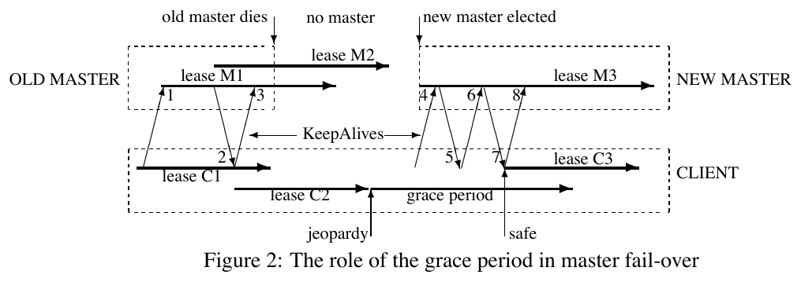
Nguồn: Burrows. The Chubby lock service, OSDI 2006, Figure 2 (grace period khi master chuyển giao; thời gian chạy từ trái sang phải, không theo tỉ lệ).
Trong bài báo gốc
Trong hệ sinh thái Hadoop
Client giữ session lease, gia hạn bằng KeepAlive tới master
Session ZooKeeper có timeout, client gửi ping/heartbeat để giữ session
Master chết: client hết lease, vào grace period, chặn lời gọi API chứ chưa huỷ session
Client mất kết nối nhưng chưa hết timeout: chờ kết nối lại tới server khác
Master mới được bầu trong vài giây, client nối lại và tiếp tục
Leader mới được bầu (ZAB), session còn hạn thì giữ nguyên znode tạm
ZooKeeper được dùng ở đâu trong Hadoop?
Thành phần
ZooKeeper dùng để
HDFS High Availability
Giám sát NameNode & kích hoạt failover
YARN
Lưu thông tin ResourceManager chủ
HBase
Theo dõi RegionServer & điều phối Master
Kafka (bản cũ)
Quản lý thông tin broker, chủ đề, phân vùng
Vai trò tổng thể
ZooKeeper là "người giữ nhịp" thầm lặng phía sau: giảm độ phức tạp phát triển hệ phân tán nhờ các primitive tin cậy có sẵn.
PHẦN 7/8
07
Tổng kết
Sơ đồ toàn cảnh hệ sinh thái Hadoop
Tổng kết nội dung chương 2
Công nghệ và nơi khởi nguồn
Lộ trình phát triển
Tài liệu tham khảo
Toàn cảnh hệ sinh thái Hadoop
Tầng
Thành phần
Vai trò
Thu thập
Kafka
Streaming sự kiện thời gian thực
Lưu trữ
HDFS, HBase
Tệp phân tán & NoSQL thời gian thực
Tính toán batch
MapReduce
Mô hình Map + Reduce song song
Phân tích
Hive, Pig
SQL-like & kịch bản data flow
Quản trị luồng
Oozie
Lập lịch workflow dạng DAG
Vận hành
ZooKeeper
Điều phối, đồng bộ, bầu leader
Điều phối tài nguyên
YARN
Quản lý tài nguyên đa ứng dụng
Tích hợp RDBMS
Sqoop
Import/export với CSDL quan hệ
Mỗi công nghệ ra đời để giải một bài toán của một công ty
Công nghệ
Khởi nguồn tại
Bài toán gốc
Hadoop (HDFS + MapReduce)
Yahoo!
Lập chỉ mục web, mô phỏng GFS và MapReduce của Google
Pig
Yahoo Research
Viết MapReduce bằng Java quá tốn công
Hive
Facebook
Dân phân tích muốn dùng SQL trên kho dữ liệu hàng chục PB
HBase
Powerset (theo Bigtable của Google)
Đọc ghi ngẫu nhiên theo khoá trên bảng khổng lồ
Sqoop
Cloudera
Đưa dữ liệu giữa RDBMS và Hadoop
Kafka
LinkedIn
Thu thập luồng sự kiện hoạt động người dùng
Oozie
Yahoo!
Điều phối chuỗi job Hadoop phụ thuộc nhau
ZooKeeper
Yahoo Research
Điều phối, bầu leader (theo Chubby của Google)
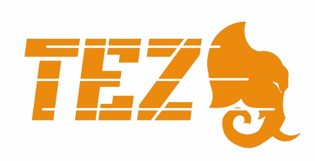
Tez, Spark, Flink
Cộng đồng Apache
Engine chạy trên YARN, thay MapReduce cho tác vụ lặp/tương tác
Lộ trình phát triển: từ 2 bài báo Google tới hệ sinh thái
Nét đứt xám = ý tưởng từ bài báo Google; nét liền = phụ thuộc lúc chạy (công cụ chạy trên Hadoop, HBase và Kafka dùng ZooKeeper, Kafka nạp dữ liệu vào HDFS).
Tổng kết chương 2
Hai nền tảng chính HDFS (lưu trữ tin cậy, mở rộng trên phần cứng rẻ) và MapReduce (lập trình
song song đơn giản) tạo lõi Hadoop. YARN tách quản lý tài nguyên, biến cụm thành hạ tầng đa nhiệm.
Các dự án mở rộng đáp ứng nhu cầu đa dạng: Hive (SQL-like), Pig (ETL kịch bản),
HBase (NoSQL thời gian thực), Sqoop (tích hợp RDBMS), Kafka (streaming),
Oozie (workflow), ZooKeeper (điều phối).
Thông điệp chính
Sức mạnh Hadoop không nằm ở riêng HDFS, mà ở toàn bộ hệ sinh thái phối hợp: thu thập → lưu trữ → tính toán → phân tích → quản trị → vận hành.
Thuật ngữ quan trọng (tra cứu nhanh)
Thuật ngữ
Giải nghĩa ngắn
NameNode / DataNode
Node quản lý metadata / node lưu block dữ liệu thật trong HDFS
Block & Replication
Đơn vị chia nhỏ tệp (64–128MB) & cơ chế nhân bản (mặc định 3 lần)
ResourceManager / NodeManager
Quản lý tài nguyên toàn cục / tác nhân quản lý tài nguyên từng node (YARN)
ApplicationMaster
Tiến trình lập lịch riêng cho mỗi ứng dụng chạy trên YARN
HiveQL / Pig Latin
Ngôn ngữ truy vấn giống SQL (Hive) / ngôn ngữ kịch bản data flow (Pig)
Column family
Nhóm các cột trong bảng wide-column của HBase
Topic / Partition
Chủ đề thông điệp / đơn vị chia nhỏ 1 topic trong Kafka để song song hoá
DAG
Đồ thị có hướng không chu trình: mô hình workflow của Oozie
Znode
Đơn vị dữ liệu trong cây thư mục phân tán của ZooKeeper
Tài liệu tham khảo
Nguồn duy nhất của toàn bộ nội dung trình bày:
Mục
Chi tiết
Giáo trình
Lưu trữ và Xử lý Dữ liệu Lớn: Trần Văn Đặng, Nguyễn Hữu Đức, Nguyễn Bình Minh, Trần Việt Trung
Đơn vị
Trường Công nghệ Thông tin & Truyền thông, Đại học Bách Khoa Hà Nội (2024)
Chương sử dụng
Chương 2: Hệ sinh thái Hadoop, tr. 23–36
Phân công
Thầy Tạ Duy Hoàng: Nhóm 1 phụ trách Chương 2 (thông báo 05/10, trình bày từ tuần 12/10)
PHẦN 8/8
08
Bonus: Ứng dụng liên ngành
Bài toán: tìm điểm chia cây quyết định
Vì sao cần kỹ thuật streaming (sketch)
Vì sao cần mô hình tính toán song song lớn (MPC)
3 bài báo của giảng viên môn học
Tài liệu tham khảo mở rộng (8 bài báo gốc)
Bài toán: tìm điểm chia cây quyết định
Khi dựng cây quyết định từ trên xuống (CART, ID3), ở mỗi nút phải chọn ngưỡng chia $j$ trên 1 thuộc tính
($x_i \le j$ hay $x_i > j$) sao cho sai số sau chia nhỏ nhất: MSE (hồi quy), tỉ lệ phân loại sai hoặc Gini (phân loại).
Ý của bài báo
Hệ quả
Chọn ngưỡng chia tối ưu = dựng cây sâu 1 (decision stump), cũng là weak learner của AdaBoost
Lặp lại thuật toán này để dựng cây sâu hơn
Mỗi lần tính sai số tại $j$ chỉ cần số phần tử (và nhãn) nằm trong 1 khoảng của $[1,N]$
Bài toán quy về đếm theo khoảng trên dữ liệu rất lớn
Nhiều thuộc tính: chạy riêng từng thuộc tính rồi chọn tốt nhất
Bộ nhớ nhân thêm hệ số $d$ (số thuộc tính)
Liên hệ với môn học
Đếm theo khoảng cùng họ bài toán rank/quantile mà streaming đã học (q-digest, MRL, KLL). Lưu ý: chính các bài báo dùng reservoir sampling và Count-Min sketch (phân rã dyadic) chứ không dùng quantile sketch.
Figure 1 (arXiv:2403.19867v4): trái là hồi quy (đường chấm là trung bình 2 nhóm), phải là phân loại; cả hai có ngưỡng tối ưu $j=4$.
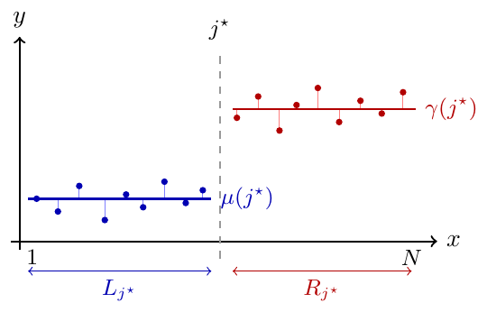
Figure 1 (arXiv:2604.20394v2): $\mu(j^\star)$ và $\gamma(j^\star)$ là giá trị dự đoán của 2 phía ngưỡng $j^\star$.
Cách đọc
Chọn $j$ nghĩa là cắt trục $x$ làm 2 đoạn $[1,j]$ và $[j+1,N]$ rồi mỗi đoạn dự đoán bằng 1 giá trị (trung bình hoặc nhãn đa số). Sai số của mọi $j$ chỉ phụ thuộc số đếm trong 2 đoạn.
Kết nối 1: vì sao cần streaming?
Theo bài báo: dữ liệu thường quá lớn để nạp vào bộ nhớ chính của 1 máy, nên được đọc dạng luồng từ đĩa hoặc qua mạng,
dùng bộ nhớ dưới tuyến tính, lý tưởng là 1 lượt duyệt (cho phép vài lượt).
Công cụ
Dùng để làm gì trong bài toán chọn ngưỡng chia
Reservoir sampling / lấy mẫu
Ước lượng số phần tử và nhãn trong 1 khoảng $R\subseteq[1,N]$ khi luồng chỉ có thêm phần tử
Count-Min sketch + phân rã dyadic
Ước lượng số đếm theo khoảng, còn xử lý được luồng có xoá; thêm hệ số $\log N$ về bộ nhớ
Sai số cộng $\varepsilon$ so với tối ưu
Đánh đổi bộ nhớ nhỏ (cỡ $\tilde O(1/\varepsilon)$ hoặc $\tilde O(1/\varepsilon^2)$) lấy ngưỡng "đủ tốt"
Kết nối 2: vì sao cần tính toán song song lớn?
Mô hình MPC (Massively Parallel Computation) trong bài báo là phép trừu tượng hoá của MapReduce, Hadoop và Spark:
Thành phần MPC
Ý nghĩa
Ứng với Hadoop
$m$ quan sát chia cho $m^{1-\beta}$ máy
Dữ liệu phân tán, không máy nào giữ hết
Block của HDFS rải trên DataNode
Mỗi máy chỉ có bộ nhớ $\tilde O(m^{\beta})$
Bộ nhớ mỗi máy dưới tuyến tính
Bộ nhớ mỗi container/task
Mỗi vòng: mọi máy gửi/nhận thông điệp rồi tính cục bộ
Đồng bộ theo vòng
Map → Shuffle → Reduce
Độ phức tạp = số vòng
Ít vòng = ít lần shuffle tốn kém
Số job MapReduce nối tiếp
Kết quả của bài báo trong MPC
Hồi quy và phân loại: bộ nhớ mỗi máy $\tilde O(\sqrt m)$, chỉ $O(1)$ vòng, sai số $\le \mathrm{OPT}+1/\sqrt m$ (bài 2, Figure 3).
Hai thế giới gặp nhau
Streaming (nửa đầu môn học)
Massively Parallel / Hadoop (Chương 2)
Ràng buộc chính
Bộ nhớ nhỏ, 1 hoặc vài lượt duyệt dữ liệu
Mỗi máy bộ nhớ nhỏ, độ phức tạp tính bằng số vòng giao tiếp
Công cụ trong bài báo
Reservoir sampling, Count-Min sketch (dyadic)
Thuật toán MPC: $O(1)$ vòng, đúng mô hình của MapReduce/Hadoop/Spark
Mục tiêu chung
Chọn ngưỡng chia cây quyết định sai số $\le \mathrm{OPT}+\varepsilon$, tốn ít bộ nhớ nhất
Cùng bài toán, tốn ít vòng giao tiếp nhất
Điểm khác với công trình nền tảng
Domingos-Hulten (KDD 2000) giả định luồng vô hạn, dữ liệu i.i.d. và chỉ xét phân loại. Các bài của thầy không cần giả định đó, có cả hồi quy, và có đảm bảo chứng minh được.
Bài báo 1: Finding Decision Tree Splits in Streaming and MPC (arXiv 2024)
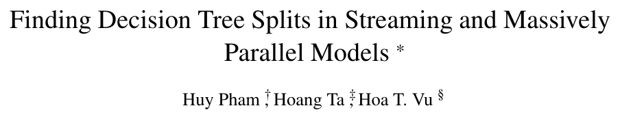
Trang đầu bài báo, arXiv:2403.19867v1 [cs.DS], 28/03/2024.
Bài toán & kết quả chính
Đầu vào: 1 luồng quan sát xi ∈ [N] cùng nhãn yi ∈ [0, M] (hồi quy) hoặc {-1, +1} (phân loại).
Mục tiêu: tìm ngưỡng chia j tối ưu, cực tiểu sai số bình phương trung bình (hồi quy) hoặc tỉ lệ phân loại sai (phân loại).
Kết quả: nhiều thuật toán streaming dùng bộ nhớ dưới tuyến tính (sublinear) và số lượt duyệt dữ liệu nhỏ, mở rộng được sang mô hình Massively Parallel Computation (MPC) — bài báo gọi đây là phép trừu tượng hoá của MapReduce, Hadoop và Spark.
Bổ sung cho công trình nền tảng của Domingos & Hulten (KDD 2000) về học cây quyết định trên luồng dữ liệu.
Bài báo 2: Constructing Decision Trees from Data Streams (ISIT 2025)
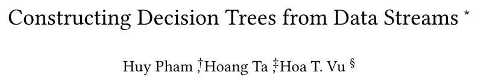
Trang đầu bài báo, arXiv:2403.19867v4 [cs.DS], 16/04/2025, công bố tại ISIT 2025 (cùng mã arXiv với bài 1, bản sửa đổi sâu, đổi tên).
Khác biệt so với bài báo 1
Bỏ giả định dữ liệu i.i.d. (độc lập, cùng phân phối) mà bài báo 1 vẫn dùng.
Thêm tiêu chí Gini impurity cho bài toán phân loại, bên cạnh sai số bình phương trung bình và tỉ lệ phân loại sai.
Mục tiêu mở rộng: không chỉ tìm 1 điểm chia mà dựng cả cây quyết định trực tiếp từ luồng dữ liệu.
Mở rộng thuật toán sang đúng mô hình MapReduce (thay vì MPC tổng quát ở bài báo 1).
Bài báo 3: Nearly Optimal Bounds for Decision Tree Splits (ESA 2026)
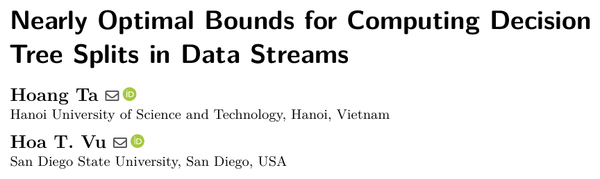
Trang đầu bài báo, arXiv:2604.20394v2 [cs.DS], 07/07/2026, công bố tại ESA 2026.
Cận trên & cận dưới gần tối ưu
Hồi quy (nhãn trong {0,…,M}): thuật toán 1 lượt duyệt, bộ nhớ Õ(M²/ε), sai số cộng ε so với điểm chia tối ưu — cải tiến thuật toán 2 lượt duyệt của Phạm & cộng sự (ISIT 2025, chính là bài báo 2).
Cận dưới khớp: chứng minh Ω(M²/ε) bộ nhớ là cần thiết, suy ra bằng reduction từ bài toán Index.
Phân loại: thuật toán 1 lượt duyệt, bộ nhớ Õ(1/ε) cho điểm chia Gini tối ưu — cải tiến thuật toán Õ(1/ε²) trước đó; cận dưới khớp Ω(1/ε) (Gini) và Ω(1/ε) (tỉ lệ phân loại sai).
Kỹ thuật: khai thác tính Lipschitz của hàm mất mát, kết hợp reservoir sampling với Count–Min sketch hỗ trợ truy vấn khoảng (range query).
Hình gốc: bảng kết quả streaming và MPC dùng chung tham số $\beta$
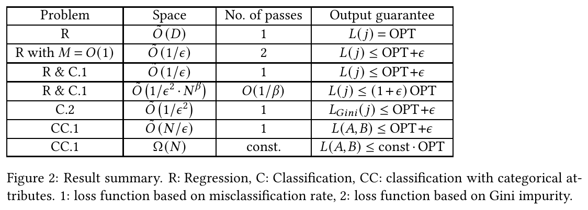
Figure 2 (arXiv:2403.19867v4): streaming, cột Space và No. of passes.
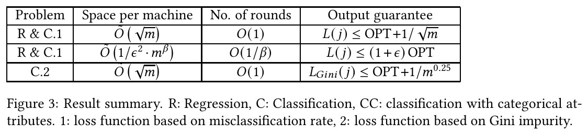
Figure 3 (cùng bài): MPC, cột Space per machine và No. of rounds.
Streaming và MPC trả giá cho cùng một phép đếm theo khoảng
Mọi ngưỡng $j$ chỉ cần các số đếm $f_R$ (kèm nhãn) trên khoảng $R\subseteq[1,N]$. Hai mô hình khác nhau ở thứ phải trả giá:
Streaming
MPC (MapReduce, Hadoop, Spark)
Tài nguyên khan hiếm
Bộ nhớ của 1 máy
Bộ nhớ $\\tilde O(m^{{\\beta}})$ của mỗi máy, $m^{{1-\\beta}}$ máy
Chọn $\\beta$ nhỏ để mỗi máy dùng ít bộ nhớ thì số vòng $O(1/\\beta)$ tăng. "Vòng" đắt vì (Figure 1, bài MapReduce) map ghi file trung gian lên đĩa cục bộ rồi reduce đọc từ xa: mỗi vòng thêm là 1 lần shuffle qua mạng.
Streaming đã có cận dưới khớp, MPC thì các bài đã đọc chưa có
Điểm nối
Căn cứ
Mức chắc chắn
Sắp xếp theo $x$ trong $O(1)$ vòng là bước đầu của thuật toán MPC
MPC là phép trừu tượng hoá MapReduce, Hadoop, Spark
Bài 2, mục 1
Nêu trong bài
Count-Min cộng được từng ô: mỗi mapper dựng sketch riêng, reducer cộng lại (như combiner)
Tính chất đã biết của Count-Min
Suy luận của nhóm
Đã chứng minh (streaming, bài 3)
Hồi quy: 1 lượt cần $\\Omega(M^2/\\varepsilon)$ bộ nhớ, thuật toán $\\tilde O(M^2/\\varepsilon)$ đạt đúng mức đó. Phân loại: $\\Omega(1/\\varepsilon)$ khớp $\\tilde O(1/\\varepsilon)$. Còn mở: bài 3 không nhắc MPC, bảng MPC của bài 2 chỉ có cận trên.
Tài liệu tham khảo mở rộng (ngoài giáo trình)
Ngoài giáo trình chính (Chương 2, tr.23–36, xem slide Tài liệu tham khảo ở Phần 7), nội dung liên hệ tới 8 bài báo gốc
sau: 5 bài nền tảng của từng công nghệ Apache, 3 bài nghiên cứu của giảng viên môn học dùng ở phần bonus.
#
Trích dẫn
Dùng ở
[1]
S. Ghemawat, H. Gobioff, S.-T. Leung. The Google File System. SOSP 2003.
HDFS (Phần 1–2)
[2]
J. Dean, S. Ghemawat. MapReduce: Simplified Data Processing on Large Clusters. OSDI 2004.
MapReduce (Phần 1, 3)
[3]
F. Chang et al. Bigtable: A Distributed Storage System for Structured Data. OSDI 2006.
HBase (Phần 5)
[4]
M. Burrows. The Chubby lock service for loosely-coupled distributed systems. OSDI 2006.
ZooKeeper / ZAB (Phần 6)
[5]
J. Kreps, N. Narkhede, J. Rao. Kafka: a Distributed Messaging System for Log Processing. NetDB 2011.
Kafka (Phần 6)
[6]
H. Phạm, H. Ta, H. T. Vu. Finding Decision Tree Splits in Streaming and Massively Parallel Models. arXiv:2403.19867v1, 2024.
Bonus (Phần 8)
[7]
H. Phạm, H. Ta, H. T. Vu. Constructing Decision Trees from Data Streams. ISIT 2025 (arXiv:2403.19867v4).
Bonus (Phần 8)
[8]
H. Ta, H. T. Vu. Nearly Optimal Bounds for Computing Decision Tree Splits in Data Streams. ESA 2026 (arXiv:2604.20394v2).
Bonus (Phần 8)
Bản PDF cả 8 bài báo: nhóm đã tải về, đọc trực tiếp phần Abstract và Introduction (mục 1) của từng bài, không trích dẫn gián tiếp qua nguồn thứ cấp.
Cảm ơn đã theo dõi
Nhóm 1: Hệ sinh thái Hadoop
Trương Tuấn Nghĩa (20251196M) · Nguyễn Vũ Việt Hoàng (20252091M) · Nguyễn Thế Hoàng (20251228M)
Môn Lưu trữ & xử lý dữ liệu lớn, giảng viên Tạ Duy Hoàng
Nguồn
Trần Văn Đặng, Nguyễn Hữu Đức, Nguyễn Bình Minh, Trần Việt Trung. Lưu trữ và Xử lý Dữ liệu Lớn, Chương 2: Hệ sinh thái Hadoop, tr.23–36. Trường CNTT&TT, ĐH Bách Khoa Hà Nội, 2024.
· 📄 Xem giáo trình gốc (PDF)
Về trang này
Hệ thống tự học mở, xây từ giáo trình Sketching Algorithms (Jelani Nelson) và lộ trình 14 buổi
tự học môn Lưu trữ & xử lý dữ liệu lớn. Toàn bộ nội dung, bài tập, quiz chạy tĩnh, không cần server.


 Yahoo!
Yahoo! Facebook
Facebook Spark, Flink
Spark, Flink